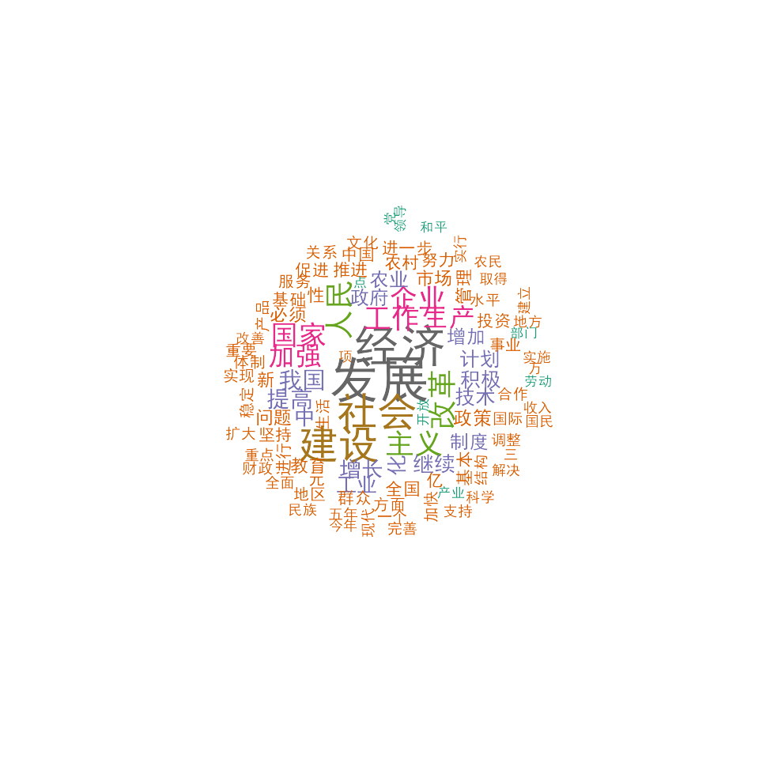

Example: Chinese text analysis
Haiyan Wang
Source:vignettes/pkgdown/examples/chinese.Rmd
chinese.Rmdlibrary(quanteda)
Download corpus
Download corpus constructed from Report on the Work of the Government published by Premier of the State Council between 1954 and 2017. You can download the corpus using the quanteda.corpora package.
# read text files devtools::install_github("quanteda/quanteda.corpora")
Tokenization
# Chinese stopwords ch_stop <- stopwords("zh", source = "misc") # tokenize ch_toks <- corp %>% tokens(remove_punct = TRUE) %>% tokens_remove(pattern = ch_stop) # construct a dfm ch_dfm <- dfm(ch_toks) topfeatures(ch_dfm)
## 发展 经济 社会 建设 改革 人民 主义 工作 企业 国家
## 5627 5036 4255 4248 2931 2897 2817 2642 2627 2595Analysis
Word cloud
# plot a word cloud set.seed(100) # to set the font correctly for macOS textplot_wordcloud(ch_dfm, min_count = 500, random_order = FALSE, rotation = .25, max_words = 100, min_size = 0.5, max_size = 2.8, font = if (Sys.info()['sysname'] == "Darwin") "SimHei" else NULL, color = RColorBrewer::brewer.pal(8, "Dark2"))

Feature co-occurrence matrix
# fcm within the window size of 5 ch17_corp <- corpus_subset(corp, Year == "2017") ch17_toks <- tokens(ch17_corp, remove_punct = TRUE) %>% tokens_remove(ch_stop) ch_fcm <- fcm(ch17_toks, context = "window") topfeatures(ch_fcm["改革", ])
## 推进 制度 性 体制 完善 试 点 供给 侧 结构
## 23 19 11 11 10 8 8 7 7 7Unsupervised document scaling
library("quanteda.textmodels")
##
## Attaching package: 'quanteda.textmodels'## The following object is masked from 'package:quanteda':
##
## data_dfm_lbgexamplewf <- textmodel_wordfish(ch_dfm) y <- 1954:2017 y <- y[y <= 1964 | y >= 1975] y <- y[!y %in% c(1963, 1961, 1962, 1976, 1977)] plot(y, wf$theta, xlab = "Year", ylab = "Position")

Collocations
# bigrams cross the whole dataset ch_col <- textstat_collocations(ch_toks, size = 2, min_count = 20) knitr::kable(head(ch_col, 10))
| collocation | count | count_nested | length | lambda | z |
|---|---|---|---|---|---|
| 社会 主义 | 1787 | 0 | 2 | 5.681516 | 129.08061 |
| １ ９ | 678 | 0 | 2 | 6.550767 | 95.51231 |
| 亿 元 | 689 | 0 | 2 | 7.465391 | 93.26674 |
| ０ ０ | 491 | 0 | 2 | 5.737061 | 85.65216 |
| 现代 化 | 632 | 0 | 2 | 6.970625 | 83.79442 |
| 体制 改革 | 504 | 0 | 2 | 5.213290 | 77.68085 |
| ９ ５ | 350 | 0 | 2 | 5.747953 | 75.33618 |
| 五年 计划 | 341 | 0 | 2 | 5.379229 | 71.91712 |
| 各级 政府 | 306 | 0 | 2 | 6.130740 | 66.85440 |
| 增长 百分 | 300 | 0 | 2 | 5.540923 | 66.12134 |
# bigrams in 2017 report ch17_col <- textstat_collocations(ch17_toks, size = 2) knitr::kable(head(ch17_col, 10))
| collocation | count | count_nested | length | lambda | z |
|---|---|---|---|---|---|
| 人民 群众 | 12 | 0 | 2 | 5.406843 | 12.89491 |
| 亿 元 | 14 | 0 | 2 | 8.302839 | 12.62184 |
| 调 控 | 11 | 0 | 2 | 7.593829 | 12.41301 |
| 政府 工作 | 9 | 0 | 2 | 4.710228 | 11.07990 |
| 深入 实施 | 8 | 0 | 2 | 5.018592 | 10.92455 |
| 党 中央 | 7 | 0 | 2 | 5.747235 | 10.90905 |
| 体制 改革 | 11 | 0 | 2 | 5.317394 | 10.53589 |
| 国内 生产 | 6 | 0 | 2 | 6.166877 | 10.48876 |
| 现代 化 | 8 | 0 | 2 | 5.706046 | 10.43500 |
| 基础 设施 | 7 | 0 | 2 | 7.549629 | 10.42514 |